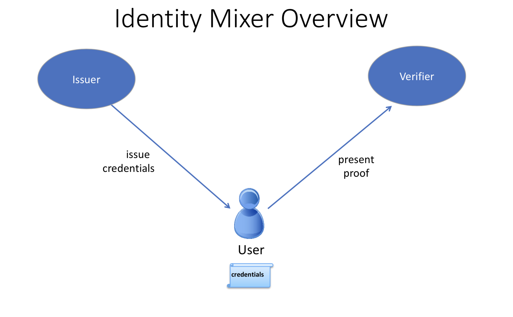

使用身份混合器（Identity Mixer）的 MSP 实现¶
什么是 Idemix？¶
Idemix 是一个加密协议套件，提供了强大的身份验证和隐私保护功能，比如，匿名（anonymity），这是一个不用明示交易者的身份即可执行交易的功能；还有，不可链接性（unlinkability），该特性可以使一个身份发送多个交易时，不能显示出这些交易是由同一个身份发出的。
在 Idemix 流程中包括三中角色： 用户（user）、发布者（issuer） 和 验证者（verifier）。
发布者以数字证书的形式发布一组用户属性，以下称此证书为“凭证（credential）”。
用户随后会生成一个 “零知识证明” 来证明自己拥有这个凭证，并且只选择性的公开自己想公开的属性。这个证明，因为是零知识的，所以不会向验证者、发布者或任何人透露任何额外信息。
例如，假设 “Alice” 需要向 Bob（商店职员）证明她有机动车管理局（DMV）发给她的驾照。
在这个场景中，Alice 是用户，机动车管理局是发布者，Bob 是验证者。为了向 Bob 证明 Alice 有驾驶执照，她可以给他看。但是，这样 Bob 就可以看到 Alice 的名字、地址、确切年龄等等，这比 Bob 有必要知道的信息多得多。
换句话说，Alice 可以使用 Idemix 为 Bob 生成一个“零知识证明”，该证明只显示她拥有有效的驾照，除此之外什么都没有。
所以，从这个证明中：
Bob 只知道 Alice 有一个有效的执照，除此之外他没有了解到关于 Alice 的任何其他信息（匿名性）。
如果 Alice 多次访问商店并每次都为 Bob 生成一个证明，Bob 将无法从这些证明中看出这是同一个人（不可链接性）。
Idemix 身份验证技术提供了与标准 X.509 证书类似的信任模型和安全保证，但是使用了底层加密算法，有效地提供了高级隐私特性，包括上面描述的特性。在下面的技术部分中，我们将详细比较 Idemix 和 X.509 技术。
如何使用 Idemix¶
要了解如何在 Hyperledger Fabric 中使用 Idemix，我们需要查看哪些 Fabric 组件对应于 Idemix 中的用户、发布者和验证者。
Fabric Java SDK 是 用户 的 API 。在将来，其他 Fabric SDK 也会支持 Idemix 。
Fabric 提供了两种可能的 Idemix 发布者 ：
Fabric CA 支持生产环境和开发环境
idemixgen 工具支持开发环境。
验证者 在 Fabric 中是 Idemix MSP 。
为了在超级账本 Fabric 中使用 Idemix ，需要以下三个基本步骤：

对比这个图和上面那个图中的角色。
考虑发布者。
Fabric CA（1.3 或更高版本）改进后可自动充当 Idemix 发布者。当启动
fabric-ca-server时（或通过fabric-ca-server init命令初始化时），将在fabric-ca-server的主目录中自动创建以下两个文件：IssuerPublicKey和IssuerRevocationPublicKey。步骤 2 需要这些文件。对于开发环境，如果你还没使用 Fabric CA，你可以使用
idemixgen创建这些文件。考虑验证者。
您需要使用步骤1中的
IssuerPublicKey和IssuerRevocationPublicKey创建 Idemix MSP。例如，考虑下面的这些摘自 Hyperledger Java SDK 示例中 configtx.yaml 的片段：
- &Org1Idemix # defaultorg defines the organization which is used in the sampleconfig # of the fabric.git development environment name: idemixMSP1 # id to load the msp definition as id: idemixMSPID1 msptype: idemix mspdir: crypto-config/peerOrganizations/org3.example.com
msptype设为idemix，并且目录mspdir``（本例中是 ``crypto-config/peerOrganizations/org3.example.com/msp）的内容包含IssuerPublicKey和IssuerRevocationPublicKey文件。注意，在本例中，
Org1Idemix代表Org1``（未显示）的 Idemix MSP，``Org1还有一个 X509 MSP 。考虑用户。回想一下，Java SDK 是用户的 API。
要使用 Java SDK 的 Idemix，只需要额外调用
org.hyperledger.fabric_ca.sdk.HFCAClient类中的idemixEnroll方法。例如，假设hfcaClient是你的 HFCAClient 对象，x509Enrollment是与你的 X509 证书相关联的org.hyperledger.fabric.sdk.Enrollment。下面的调用将会返回一个和你的 Idemix 凭证相关联的
org.hyperledger.fabric.sdk.Enrollment对象。IdemixEnrollment idemixEnrollment = hfcaClient.idemixEnroll(x509enrollment, "idemixMSPID1");
还需要注意，
IdemixEnrollment实现了org.hyperledger.fabric.sdk.Enrollment接口，因此可以像使用 X509 注册对象一样使用它，当然 Idemix 自动提供了改进的隐私保护功能。
Idemix 和链码¶
从验证者的角度来看，还有一个角色需要考虑：链码。当使用 Idemix 凭证时，链码可以获取有关交易参与者的哪些信息？
当使用 Idemix 凭证时，`cid (Client Identity) 库<https://godoc.org/github.com/hyperledger/fabric-chaincode-go/pkg/cid>`_ （只支持 golang ）已扩展支持 GetAttributeValue 方法。但是，像下面“当前限制”模块提到的那样，在 Idemix 的情况下，只有两个展示出来的属性：ou 和 role。
如果 Fabric CA 是凭证发布者：
ou 属性的值是身份的 **从属（affiliation）**（例如，“org1.department1”）；
role属性的值将是 ‘member’ 或 ‘admin’。‘admin’ 表示该身份是 MSP 管理员。默认情况下，Fabric CA 创建的身份将返回 ‘member’ 角色。要创建一个 ‘admin’ 身份，使用值为2的role属性注册身份。
用 Java SDK 设置从属的例子，请查看 示例 。
在 go 链码中使用 CID 库来检索属性的例子，请查看 `go 链码<https://github.com/hyperledger/fabric-sdk-java/blob/master/src/test/fixture/sdkintegration/gocc/sampleIdemix/src/github.com/example_cc/example_cc.go#L88>`_ 。
Idemix组织不能用于背书链码或批准链码 定义。当你设置 你通道的生命周期背书和背书策略时，这点需要被考虑进去。更多信息 信息，请参阅以下的限制章节。
当前限制¶
Idemix 的当前版本有一些限制。
Idemix 组织和背书策略
Idemix 组织不能用于背书链码交易或批准链码定义。默认情况下，
Channel/Application/LifecycleEndorsement和Channel/Application/Endorsement策略需要活跃在通道上的大多数组织的签名。 这意味着一个包含大量 Idemix 组织的通道可能不能达到实现默认策略所需的多数。例如，如果一个通道有两个 MSP 组织和两个 Idemix 组织，通道政策要求四分之三的组织批准链码定义将该定义提交给通道。因为 Idemix 组织不能批准链码定义，策略将仅能验证四个签名中的两个。如果你的通道包含足够多数量的 Idemix 组织来影响背书策略，你能使用签名策略来明确指定需要的 MSP 组织。
固定的属性集合
还不支持发布 Idemix 凭证的自定义属性。自定义属性在将来会支持。
下面的四个属性是支持的：
组织单元（Organizational Unit）属性（"ou"）：
用法：和 X.509 一样
类型：String
显示（Revealed）：总是
角色（Role） 属性（"role"）：
用法：和 X.509 一样
类型：integer
显示（Revealed）：总是
注册 ID（Enrollment ID）属性：
用法：用户的唯一身份，即属于同一用户的所有注册凭证都是相同的（在将来的版本中用于审计）
类型：BIG
显示（Revealed）：不在签名中使用，只在为 Fabric CA 生成身份验证 token 时使用
撤销句柄（Revocation Handle）属性：
用法：唯一性身份凭证（在将来的版本中用于撤销）
类型：integer
显示：从不
还不支持撤销
尽管存在上面提到的撤销句柄属性，可以看出撤销框架的大部分已经就绪，但是还不支持撤销 Idemix 凭证。
节点背书时不使用 Idemix
目前 Idemix MSP 只被节点用来验证签名。只完成了在Client SDK 中使用 Idemix 签名。未来会支持更多角色（包括 ‘peer’ 角色）使用 Idemix MSP 。
技术总结¶
对比 Idemix 凭证和 X.509 证书¶
Idemix 和 X.509 中的证书/凭证的概念、颁发过程，非常相似：一组属性使用不能伪造的数字签名进行签名，并且有一个利用密码学绑定的密钥。
标准 X.509 证书和 Identity Mixer 证书之间的主要区别是用于验证属性的签名方案。Identity Mixer 系统下的签名能够使其有效地证明所有者拥有该签名和相应的属性，而无需揭示签名和（选择的）属性值本身。我们使用零知识证明来确保这些“知识”或“信息”不会被泄露，同时确保属性上的签名有效，并且确保用户拥有相应的凭证密钥。
这样的证明，比如 X.509 证书，可以使用最初签署证书的机构的公钥进行验证，并且无法成功伪造。只有知道凭证密钥的用户才能生成凭证及其属性的证明。
关于不可链接性，当提供 X.509 证书时，必须显示所有属性来验证证书签名。这意味着所有用于签署交易的证书的用法都是可链接的。
为了避免这种可链接性，每次都需要使用新的 X.509 证书，这会导致复杂的密钥管理、通信和存储开销。此外，在某些情况下，即使颁发证书的 CA 也不应该将所有交易链接到用户，这一点很重要。
Idemix 有助于避免 CA 和验证者之间的可链接性，因为即使是 CA 也不能将证明链接到原始凭证。发布者或验证者都不能分辨两种证明是否是来自同一凭证。
这篇文章详细介绍了 Identity Mixer 技术的概念和特点 `Concepts and Languages for Privacy-Preserving Attribute-Based Authentication<https://link.springer.com/chapter/10.1007%2F978-3-642-37282-7_4>`_ 。
扩展信息¶
鉴于上述限制，建议每个通道仅使用一个基于 Idemix 的 MSP，或者在极端情况下，每个网络使用一个基于 Idemix 的 MSP。实际上，如果每个通道有多个基于 Idemix 的 MSP，那么任意参与方读取该通道的账本，即可区分出来各个交易分别是由哪个 Idemix MSP 签署的。这是因为，每个交易都会泄漏签名者的 MSP-ID 。换句话说，Idemix 目前只提供同一组织（MSP）中客户端的匿名性。
将来，Idemix 可以扩展为支持基于 Idemix 的多层匿名结构的认证机构体系，这些机构认证的凭证可以通过使用唯一的公钥进行验证，从而实现跨组织的匿名性（MSP）。这将允许多个基于 Idemix 的 MSP 在同一个通道中共存。
在主体中，可以将通道配置为具有单个基于 Idemix 的 MSP 和多个基于 X.509 的 MSP。当然，这些 MSP 之间的交互可能会泄露信息。对泄露的信息需要逐案进行评估。
底层加密协议¶
Idemix 技术是建立在一个盲签名方案的基础上的，该方案支持签名拥有多个消息和有效的的零知识证明。Idemix 的所有密码构建模块都在顶级会议和期刊上发表了，并得到了科学界的验证。
Fabric 的这个特定 Idemix 实现使用了一个 pairing-based 的签名方案，该方案由 `Camenisch 和 Lysyanskaya https://link.springer.com/chapter/10.1007/978-3-540-28628-8_4>`_ 简要提出，并由 Au et al. 详细描述。使用了在零知识证明 Camenisch et al. 中证明签名的知识的能力。